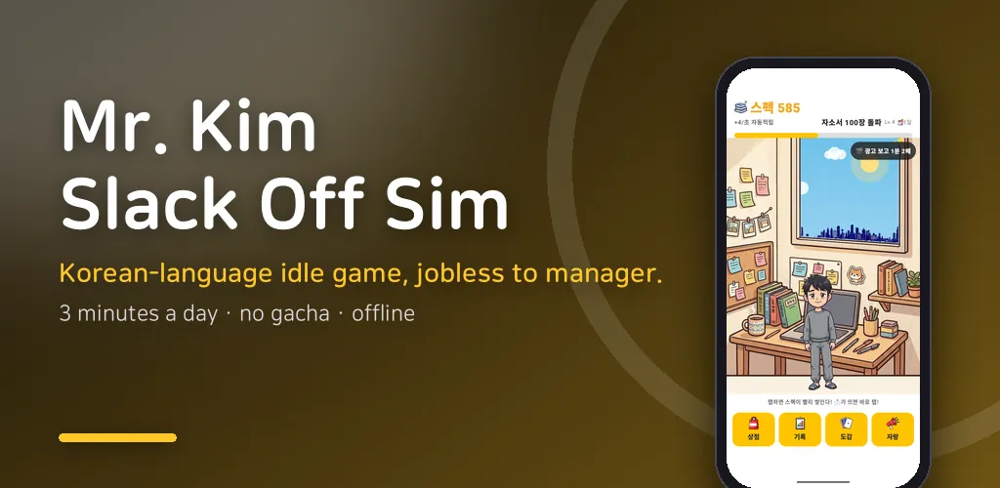
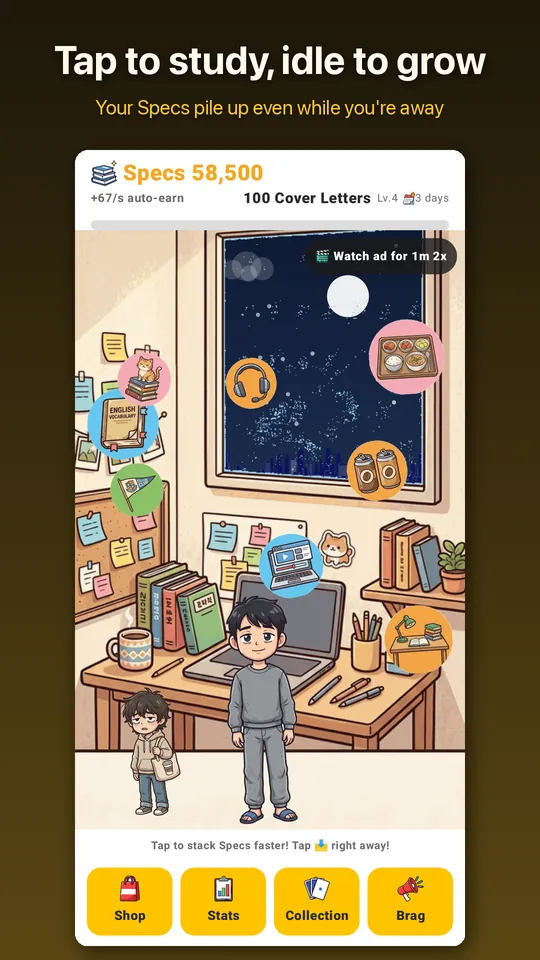
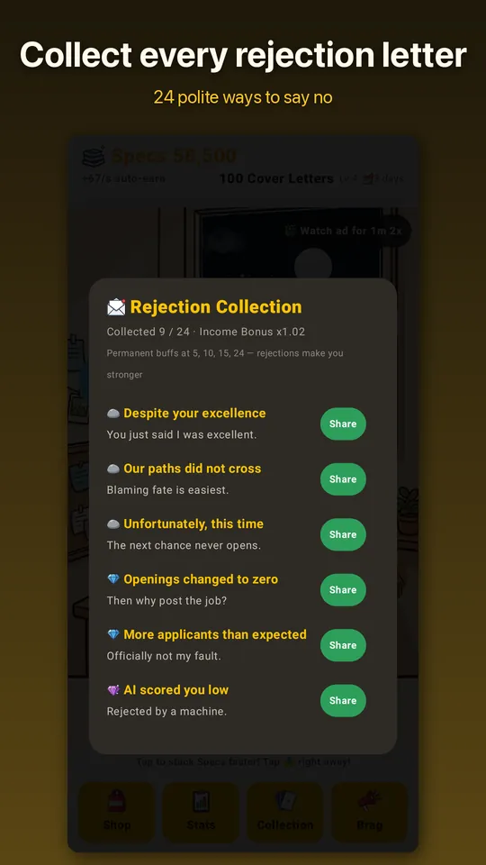
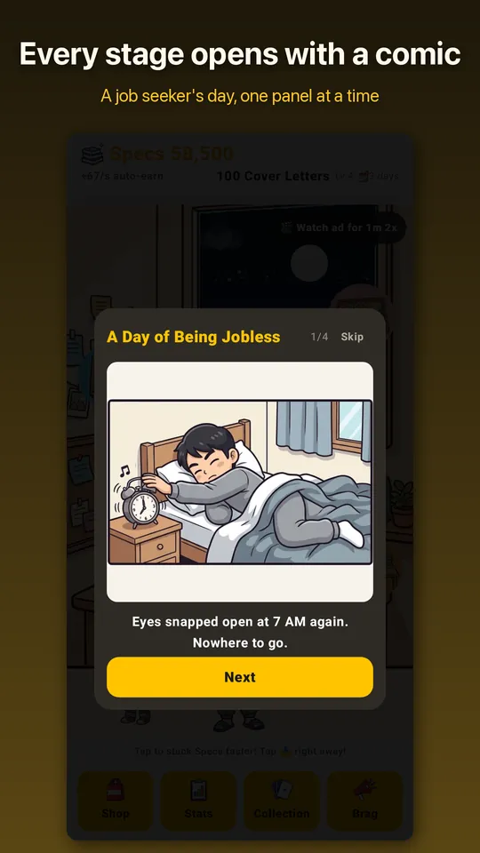
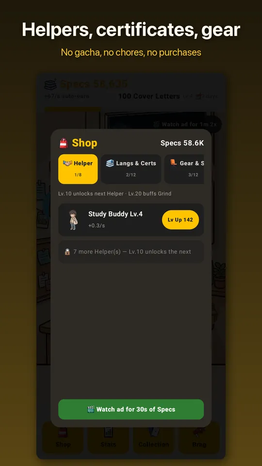

Mr. Kim: Slack Off Sim
Idle job-hunt satire: from jobless to Manager Kim. No gacha, no chores.





About this app
An idle clicker about the world's most earnest job seeker.
Tap and idle your way from jobless, through rejection letters (collect all 24!),
to your first job, to Manager Kim, and all the way to CEO.
Four-panel comics mark the big moments, and your outfit changes with every promotion.
No gacha, no battle pass, no daily chores. Free to play, ad-supported, no in-app purchases.
Play in 17 languages — every item, rejection letter and comic is translated.
This app is fictional entertainment. It is not real job-search advice and is not
affiliated with any real person, company, or school.
Android · free with ads · Developer: RealTunaLove · Store listing in 17 languages
Background story: why I built it